尚未做好網頁
裝機流程SOP教學
流程說明
1.辨別、紀錄POS機號
2.刪除資料庫內自營紀錄
3.重新下傳POS資料
4.備份銷售資料
5.執行換機作業
6.確認是否換機成功
7.若失敗 拋回備份資料
辨別、紀錄POS機號
一般類別POS_類別入帳
自營POS_商品條碼入帳
一般POS_重新下傳POS資料
自營POS_多一刪除資料庫的步驟
刪除資料庫自營紀錄
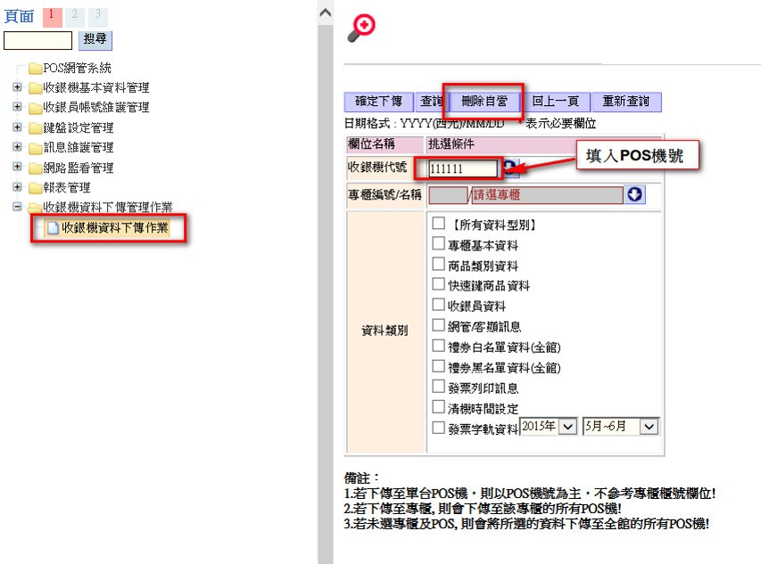
重新下傳POS資料

備份銷售資料
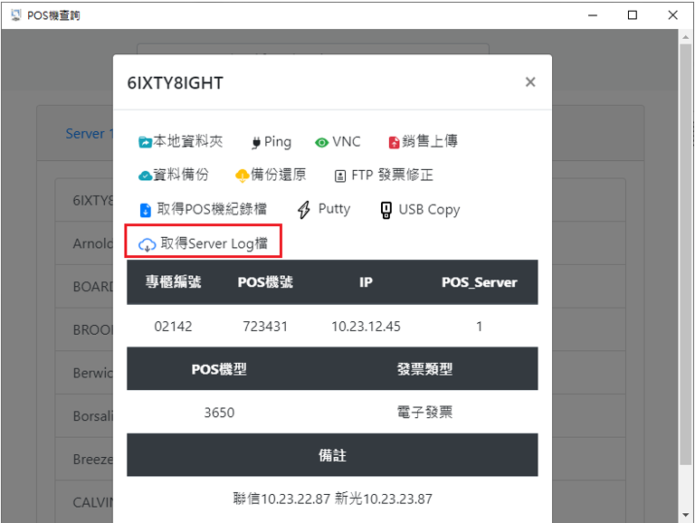
將server上該POS機今日的log檔使用POS工具備份至桌面
新功能的POS工具在 Y:\1_值班SOP\POSQuery\POSQuery.exe
點擊後會將檔案抓至個人PC桌面，需在檔名後方加上2025
更換POS
建議安裝步驟
故障POS關機
備份SERVER上銷售紀錄檔
安裝新機器
設定換機作業
開機
登入銷售後確認是否自動抓取資料
若換機失敗 將備份的Log檔覆蓋回本機Log檔
進入銷售畫面確認資料復原無誤
換機作業
安裝新POS後，執行換裝設定
如同裝機設定POS機號、櫃號、IP等
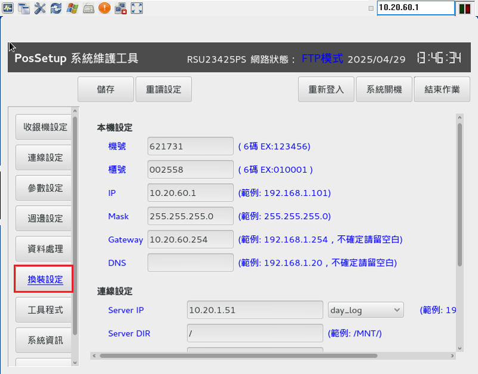
換機作業2
輸入完所有設定後，按下儲存
按下確定並等待POS自動關機
若是按下結束作業會導致換機失敗
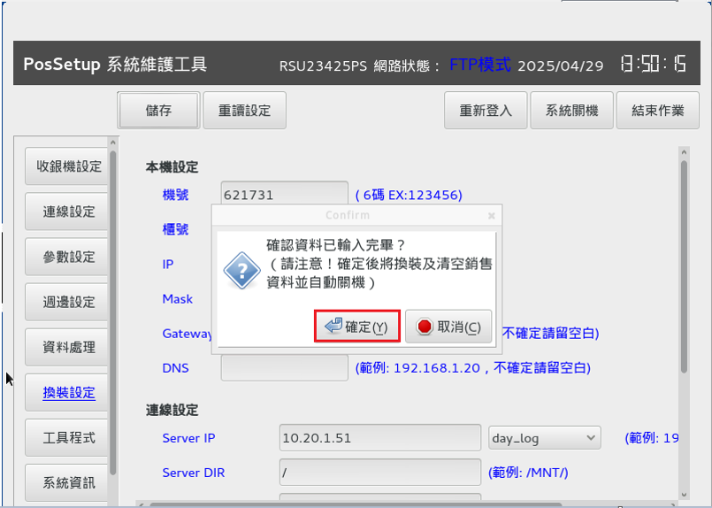
換機作業3
換裝結束，確認原銷售資料是否有成功入新POS
交易序號不為1開頭、即時業績查詢有今日業績
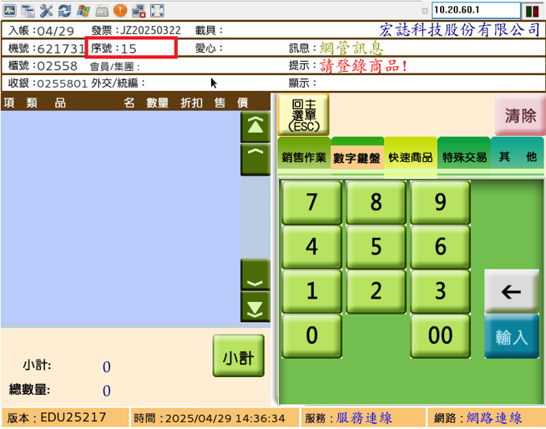 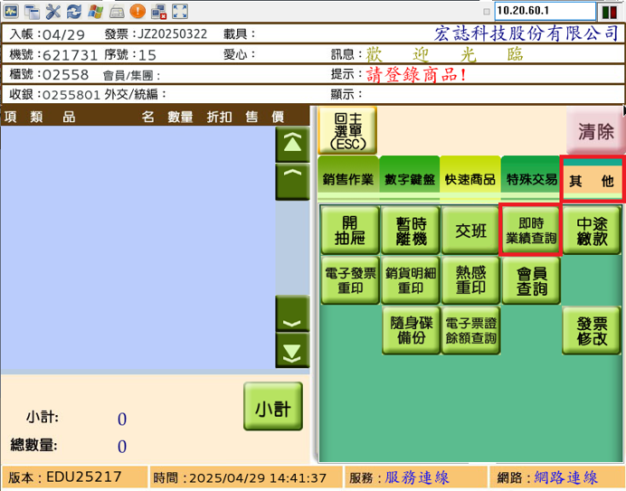換機作業 可能失敗原因
Server資料量過大 搜尋至Time Out
自行按下結束作業或系統關機而非POS自動關機
設定錯誤或網路異常等情況
只要換機失敗會造成POS本機帳務遺失
需進行備份Log檔拋回動作
換機失敗 使用備份檔案1
假設換機失敗_帳務消失_回到辦公室連線現場POS機_將備份檔案拋回POS機內
假設POS IP為10.23.12.45
個人PC端檔案總管輸入\\10.23.12.45
將剛剛從Server備份的銷售紀錄檔案覆蓋新POS
\\10.23.12.45\rslpos\POSLOG 內的L檔_檔名設定相同後覆蓋
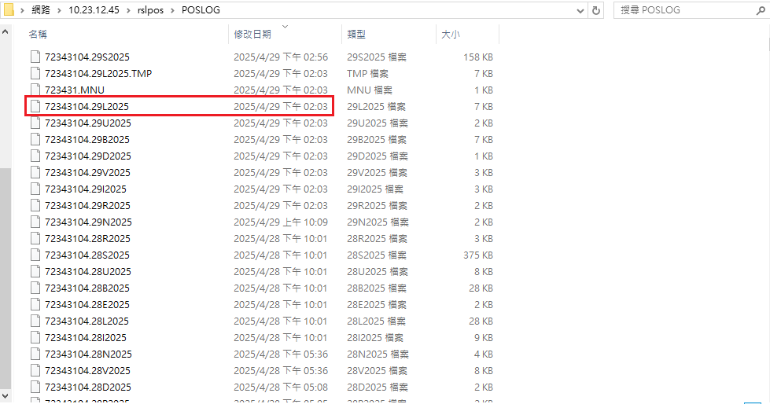
換機失敗 使用備份檔案2
也可提前將備份的L檔放入POS小型USB，於現場POS換機失敗時，插入POS並手動將L檔補回
POS進入系統維護畫面後，螢幕左側有兩個小白點，用指甲點擊白點中間處，開啟Linux使用者介面
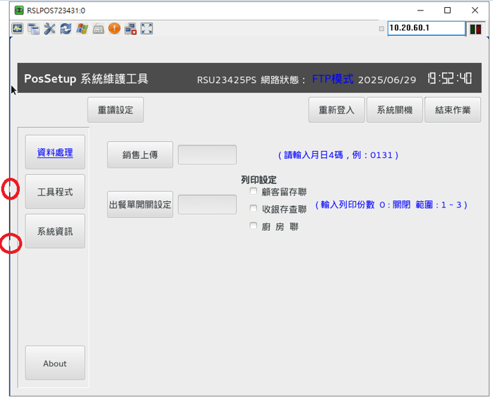 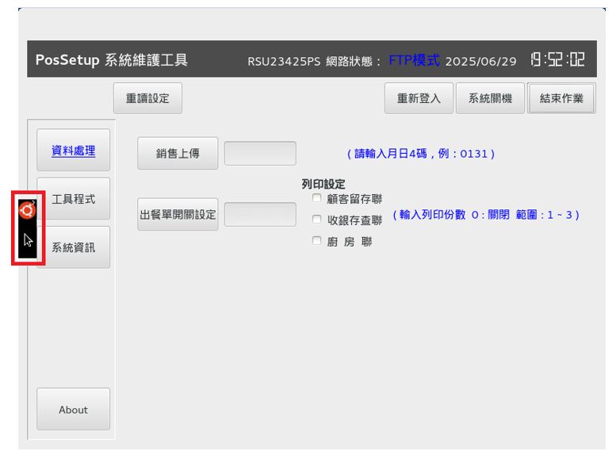
換機失敗 使用備份檔案3
進入使用者介面後，依照“家目錄/RSLPOS/POSLOG”路徑，找到當天L檔並刪除
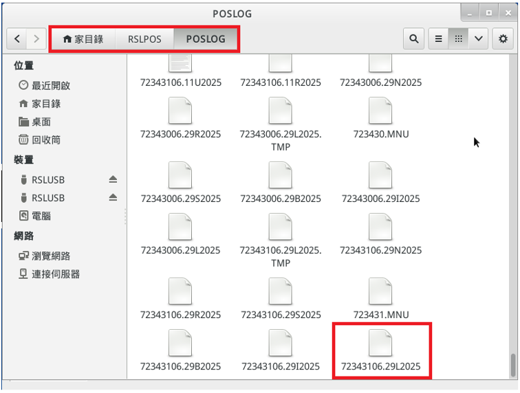 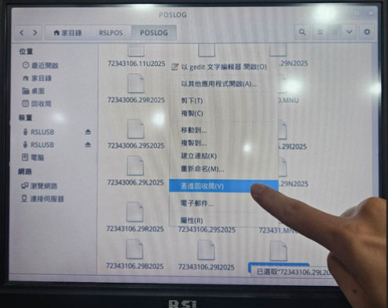
換機失敗 使用備份檔案4
將檔案丟入回收桶后，安裝上小型USB，並將先前備份檔案複製到“家目錄/RSLPOS/POSLOG”在按右上角X退出介面，並結束作業
POS重啟後，重新進入銷售作業，查看帳務是否有還原
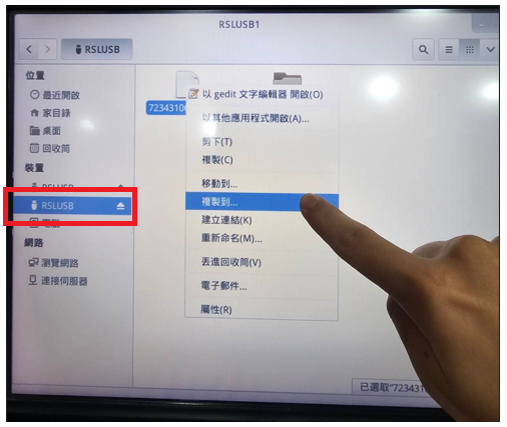 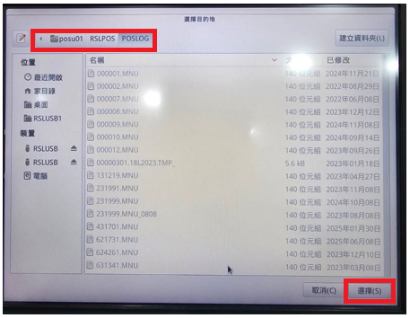確認銷售資料是否復原
檔案覆蓋後，按下版本更新，並重新登入銷售畫面
查看POS交易序號是否有延續故障POS的序號
請專櫃人員確認業績數字無誤